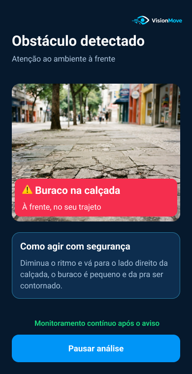

Pessoas com dificuldade de enxergar no Brasil, mesmo com correção visual.
IBGE · Censo 2022 — dados sobre deficiência visual (abre em nova aba)TECNOLOGIA ASSISTIVA PARA MOBILIDADE URBANA
Seu ambiente,
mais acessível.
Mais informação sobre o caminho. Mais autonomia para seguir em frente.
O VisionMove é um aplicativo mobile em desenvolvimento que combina uma câmera portátil, inteligência artificial e alertas sonoros para apoiar pessoas com deficiência visual na identificação de obstáculos durante o deslocamento.
Tecnologia complementar à bengala e ao cão-guia.

- 01Câmera portátilCapta o caminho à frente.
- 02Inteligência artificialAnalisa possíveis obstáculos.
- 03Alertas por áudioComunica situações relevantes.
O DESAFIO
A mobilidade urbana ainda apresenta barreiras.
Buracos, desníveis e obstáculos suspensos podem dificultar o deslocamento de pessoas cegas ou com baixa visão. É nesse cenário que nasce a proposta do VisionMove.
Dos moradores urbanos pesquisados viviam em vias com calçadas livres de obstáculos.
IBGE · Censo 2022 — dados sobre calçadas livres de obstáculos (abre em nova aba)NOSSA SOLUÇÃO
Tecnologia que ajuda você a perceber o caminho.
Conheça o funcionamento proposto para o VisionMove, atualmente em desenvolvimento.
01
Conecte a câmera
Prenda a câmera compatível à roupa ou à alça da mochila e prepare o aplicativo.
02
Analise o percurso
A inteligência artificial é desenvolvida para identificar possíveis obstáculos no caminho.
03
Receba orientações
Os alertas sonoros deverão comunicar riscos relevantes sem substituir a percepção do ambiente.
EXEMPLO
Informações no momento certo.
Uma demonstração visual de como o VisionMove pode apresentar avisos sobre obstáculos.
Obstáculo à frenteExemplo de aviso: atenção à calçada
Imagem ilustrativa do protótipo. O aplicativo está em desenvolvimento; o exemplo não comprova detecção em tempo real.
EXPERIMENTE O VISIONMOVE
Conheça o VisionMove na prática.
Explore o protótipo navegável e acompanhe o lançamento do aplicativo mobile.
EXPERIÊNCIA INTERATIVA
Protótipo navegável
Explore as telas e o fluxo planejado para o VisionMove.
Acessar protótipo (abre em nova aba)APLICATIVO MOBILE
Aplicativo em breve
O VisionMove está em desenvolvimento. O download será disponibilizado aqui quando estiver pronto.
Ouça ou leia a descrição do fluxo do aplicativo
Descrição textual da experiência planejada para o aplicativo mobile em desenvolvimento, como alternativa à demonstração visual:
- Abra o VisionMove e autorize os recursos necessários.
- Conecte a câmera portátil ao celular e inicie o monitoramento.
- Durante o percurso, a proposta é identificar obstáculos e informar a pessoa por alertas sonoros.
- Pause, retome ou encerre a análise quando desejar.
- Se a câmera se desconectar, o aplicativo apresenta a opção de reconectar.
Essas funcionalidades estão em desenvolvimento e não representam uma validação da detecção em ambientes reais.
FEEDBACK E NOVIDADES
Sua voz faz a diferença.
Deixe uma sugestão para a equipe ou acompanhe as próximas etapas do projeto.